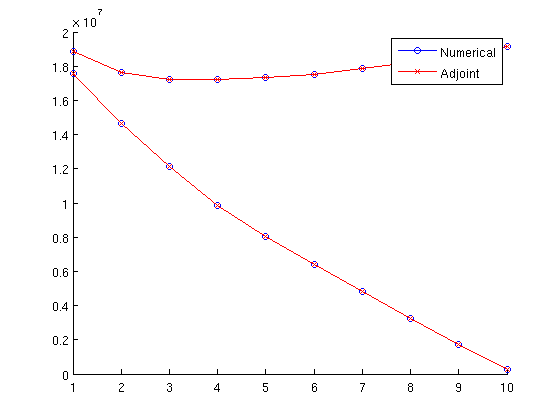

verbose = true;
verboseLevel = 1;
nx = 10; ny = 10; nz = 1;
G = cartGrid([nx ny nz]);
G = computeGeometry(G);
rock.perm = exp(( 3*rand(nx*ny, 1) + 1))*100*milli*darcy;
rock.perm = ones( size(rock.perm) )*milli*darcy;
rock.poro = repmat(0.3, [G.cells.num, 1]);
fluid = initCoreyFluid('mu' , [ 1, 5].*centi*poise , ...
'rho', [1014, 859]*kilogram/meter^3, ...
'n' , [ 2, 2] , ...
'sr' , [ 0, 0] , ...
'kwm', [ 1, 1]);
fluid = adjointFluidFields(fluid);
S = computeMimeticIP(G, rock, 'Type', 'comp_hybrid', 'Verbose', verbose);
objectiveFunction = str2func('simpleNPV');
radius = .1;
W = addWell([], G, rock, 1 , 'Type', 'bhp' , 'Val', 100*barsa, 'Radius', radius, 'Name', 'i1', 'Comp_i', [1, 0]);
W = addWell( W, G, rock, nx , 'Type', 'rate', 'Val', -.5/day , 'Radius', radius, 'Name', 'p1', 'Comp_i', [0, 1]);
W = addWell( W, G, rock, nx*ny-nx+1, 'Type', 'rate', 'Val', -.5/day , 'Radius', radius, 'Name', 'p3', 'Comp_i', [0, 1]);
W = addWell( W, G, rock, nx*ny , 'Type', 'rate', 'Val', -.5/day , 'Radius', radius, 'Name', 'p3', 'Comp_i', [0, 1]);
W = assembleWellSystem(G, W, 'Type', 'comp_hybrid');
resSolInit = initResSol(G, 0.0);
resSolInit.wellSol = initWellSol(W, 0);
totVol = sum(G.cells.volumes.*rock.poro);
schedule = initSchedule(W, 'NumSteps', 10, 'TotalTime', totVol*day, 'Verbose', verbose);
controls = initControls(schedule, 'ControllableWells', (2:4), ...
'Verbose', verbose, ...
'NumControlSteps', 10);
simRes = runSchedule(resSolInit, G, S, W, rock, fluid, schedule, ...
'VerboseLevel', verboseLevel);
adjRes = runAdjoint(simRes, G, S, W, rock, fluid, schedule, controls, ...
objectiveFunction, 'VerboseLevel', verboseLevel);
grad = computeGradient(W, adjRes, schedule, controls);
numGrad = computeNumericalGradient(simRes, G, S, W, rock, fluid, ...
schedule, controls, objectiveFunction)
adjGrad = cell2mat(grad)
figure; hold on
for k = 1 : size(numGrad, 1);
plot(numGrad(k,:), '-ob');
plot(adjGrad(k,:), '-xr');
end
legend('Numerical', 'Adjoint')
Using inner product: 'ip_simple'.
Computing cell inner products ... Elapsed time is 0.026965 seconds.
Assembling global inner product matrix ... Elapsed time is 0.000221 seconds.
Max error in inverse = 2.9976e-15
----------------- DISPLAYING SCHEDULE ----------------
Time interval : 0.00 - 259200.00
Well name Type Value
i1 bhp 10000000
p1 rate -5.787e-06
p3 rate -5.787e-06
p3 rate -5.787e-06
Time interval : 259200.00 - 518400.00
Well name Type Value
i1 bhp 10000000
p1 rate -5.787e-06
p3 rate -5.787e-06
p3 rate -5.787e-06
Time interval : 518400.00 - 777600.00
Well name Type Value
i1 bhp 10000000
p1 rate -5.787e-06
p3 rate -5.787e-06
p3 rate -5.787e-06
Time interval : 777600.00 - 1036800.00
Well name Type Value
i1 bhp 10000000
p1 rate -5.787e-06
p3 rate -5.787e-06
p3 rate -5.787e-06
Time interval : 1036800.00 - 1296000.00
Well name Type Value
i1 bhp 10000000
p1 rate -5.787e-06
p3 rate -5.787e-06
p3 rate -5.787e-06
Time interval : 1296000.00 - 1555200.00
Well name Type Value
i1 bhp 10000000
p1 rate -5.787e-06
p3 rate -5.787e-06
p3 rate -5.787e-06
Time interval : 1555200.00 - 1814400.00
Well name Type Value
i1 bhp 10000000
p1 rate -5.787e-06
p3 rate -5.787e-06
p3 rate -5.787e-06
Time interval : 1814400.00 - 2073600.00
Well name Type Value
i1 bhp 10000000
p1 rate -5.787e-06
p3 rate -5.787e-06
p3 rate -5.787e-06
Time interval : 2073600.00 - 2332800.00
Well name Type Value
i1 bhp 10000000
p1 rate -5.787e-06
p3 rate -5.787e-06
p3 rate -5.787e-06
Time interval : 2332800.00 - 2592000.00
Well name Type Value
i1 bhp 10000000
p1 rate -5.787e-06
p3 rate -5.787e-06
p3 rate -5.787e-06
----------------- DISPLAYING CONTROL VARIABLES ----------------
Var Name Type MaxMin
u_1 p1 rate [-Inf Inf]
u_2 p3 rate [-Inf Inf]
u_3 p3 rate [-Inf Inf]
******* Starting forward simulation *******
Time step 1 of 10, Pressure: 0.006 sec, Transport: 0.025 sec
Time step 2 of 10, Pressure: 0.005 sec, Transport: 0.016 sec
Time step 3 of 10, Pressure: 0.005 sec, Transport: 0.023 sec
Time step 4 of 10, Pressure: 0.005 sec, Transport: 0.016 sec
Time step 5 of 10, Pressure: 0.004 sec, Transport: 0.013 sec
Time step 6 of 10, Pressure: 0.004 sec, Transport: 0.014 sec
Time step 7 of 10, Pressure: 0.005 sec, Transport: 0.014 sec
Time step 8 of 10, Pressure: 0.005 sec, Transport: 0.014 sec
Time step 9 of 10, Pressure: 0.005 sec, Transport: 0.014 sec
Time step 10 of 10, Pressure: 0.005 sec, Transport: 0.014 sec
******* Starting adjoint simulation *******
Time step 10 of 10, Transport: 0.002 sec, Pressure: 0.007 sec
Time step 9 of 10, Transport: 0.002 sec, Pressure: 0.006 sec
Time step 8 of 10, Transport: 0.002 sec, Pressure: 0.007 sec
Time step 7 of 10, Transport: 0.002 sec, Pressure: 0.007 sec
Time step 6 of 10, Transport: 0.002 sec, Pressure: 0.007 sec
Time step 5 of 10, Transport: 0.002 sec, Pressure: 0.006 sec
Time step 4 of 10, Transport: 0.002 sec, Pressure: 0.006 sec
Time step 3 of 10, Transport: 0.002 sec, Pressure: 0.006 sec
Time step 2 of 10, Transport: 0.002 sec, Pressure: 0.006 sec
Time step 1 of 10, Transport: 0.002 sec, Pressure: 0.006 sec
numGrad =
1.0e+07 *
1.8879 1.7619 1.7223 1.7232 1.7329 1.7534 1.7840 1.8226 1.8664 1.9124
1.8879 1.7618 1.7223 1.7231 1.7329 1.7533 1.7840 1.8227 1.8667 1.9128
1.7564 1.4665 1.2117 0.9860 0.8046 0.6396 0.4798 0.3235 0.1712 0.0251
adjGrad =
1.0e+07 *
1.8879 1.7618 1.7223 1.7231 1.7329 1.7533 1.7840 1.8226 1.8664 1.9124
1.8879 1.7618 1.7223 1.7231 1.7329 1.7534 1.7841 1.8227 1.8667 1.9128
1.7563 1.4665 1.2116 0.9859 0.8046 0.6396 0.4798 0.3235 0.1711 0.0251
